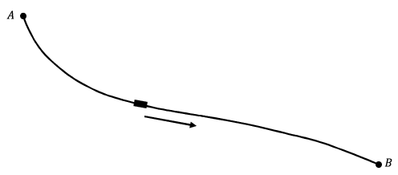

The rules for calculus were first laid out in Gottfried Wilhelm Leibniz’s 1684 paper Nova methodus pro maximis et minimis, itemque tangentibus, quae nec fractas nec irrationales, quantitates moratur, et singulare pro illi calculi genus (A New Method for Maxima and Minima as Well as Tangents, Which is Impeded Neither by Fractional Nor by Irrational Quantities, and a Remarkable Type of Calculus for This). Leibniz started with subtraction. That is, if \(x_1\) and \(x_2\) are very close together then their difference, \(\Delta
x=x_2-x_1\text{,}\) is very small. He expanded this idea to say that if \(x_1\) and \(x_2\) are infinitely close together (but still distinct) then their difference, \(\dx{ x}\text{,}\) is infinitesimally small (but not zero).
This idea is logically very suspect and Leibniz knew it. But he also knew that when he used his calculus differentialis he was getting correct answers to some very hard problems. So he persevered.
Leibniz called both \(\Delta x\) and \(\dx{ x}\) “differentials” (Latin for difference) because he thought of them as, essentially, the same thing. Over time it has become customary to refer to the infinitesimal \(\dx{ x}\) as a differential, reserving “difference” for the finite case, \(\Delta x\text{.}\) This is why calculus is often called “differential calculus.”
In his paper Leibniz gave rules for dealing with these infinitely small differentials. Specifically, given a variable quantity \(x\text{,}\)\(dx\) represented an infinitesimal change in \(x\text{.}\) Differentials are related via the slope of the tangent line to a curve. That is, if \(y=f(x)\text{,}\) then \(\dx{ y}\) and \(\dx{ x}\) are related by
\begin{equation*}
\dx{ y}=\text{ (slope of the tangent line) } \cdot \dx{ x}\text{.}
\end{equation*}
Leibniz then divided by \(\dx{ x}\) giving
\begin{equation*}
\dfdx{y}{x}= \text{ (slope of the tangent line). }
\end{equation*}
The elegant and expressive notation Leibniz invented was so useful that it has been retained through the years despite some profound changes in the underlying concepts. For example, Leibniz and his contemporaries would have viewed the symbol \(\dfdx{y}{x}\) as an actual quotient of infinitesimals, whereas today we define it via the limit concept first suggested by Newton.
As a result the rules governing these differentials are very modern in appearance:
Leibniz states these rules without proof: “. . . the demonstration of all this will be easy to one who is experienced in such matters . . ..” As an example, mathematicians in Leibniz’s day would be expected to understand intuitively that if \(c\) is a constant, then \(d(c)=c-c=0\text{.}\) Likewise, \(d(x+y)=dx+dy\) is really an extension of \((x_2+y_2)-(x_1+y_1)=(x_2-x_1)+(y_2-y_1)\text{.}\)
Subsection4.1.2Leibniz’s Approach to the Product Rule
The explanation of the product rule using differentials is a bit more involved, but Leibniz expected that mathematicans would be fluent enough to derive it. The product \(p=xv\) can be thought of as the area of the following rectangle
Figure4.1.2.
With this in mind, \(\dx{ p}=\dx{(xv)}\) can be thought of as the change in area when \(x\) is changed by \(\dx{ x}\) and \(v\) is changed by \(\dx{ v}\text{.}\) This can be seen as the L shaped region in the following drawing.
Figure4.1.3.
By dividing the L shaped region into 3 rectangles we obtain
Even though \(\dx{ x}\) and \(\dx{ v}\) are infinitely small, Leibniz reasoned that \(\dx{ x}\,\dx{ v}\) is even more infinitely small (quadratically infinitely small?) compared to \(x\dx{ v}\) and \(v\dx{ x}\) and can thus be ignored leaving
You should feel some discomfort at the idea of simply tossing the product \(\dx{ x}\,\dx{ v}\) aside because it is “comparatively small.” This means you have been well trained, and have thoroughly internalized Newton’s dictum [10]: “The smallest errors may not, in mathematical matters, be scorned.” It is logically untenable to toss aside an expression just because it is small. Even less so should we be willing to ignore an expression on the grounds that it is “infinitely smaller” than another quantity which is itself “infinitely small.”
Newton and Leibniz both knew this as well as we do. But they also knew that their methods worked. They gave verifiably correct answers to problems which had, heretofore, been completely intractable. It is the mark of their genius that both men persevered in spite of the very evident difficulties their methods entailed.
Subsection4.1.3Newton’s Approach to the Product Rule
In the Principia, Newton “proved” the Product Rule as follows: Let \(x\) and \(v\) be “flowing quantites” and consider the rectangle, \(R\text{,}\) whose sides are \(x\) and \(v\text{.}\)\(R\) is also a flowing quantity and we wish to find its fluxion (derivative) at any time.
First increment \(x\) and \(v\) by \(\frac{\Delta x}{2}\) and \(\frac{\Delta v}{2}\) respectively. Then the corresponding increment of \(R\) is
This argument is no better than Leibniz’s as it relies heavily on the number \(1/2\) to make it work. If we take any other increments in \(x\) and \(v\) whose total lengths are \(\Delta x\) and \(\Delta v\) it will simply not work. Try it and see.
In Newton’s defense, he wasn’t really trying to justify his mathematical methods in the Principia. His attention there was on physics, not math, so he was really just trying to give a convincing demonstration of his methods. You may decide for yourself how convincing his demonstration is.
Notice that there is no mention of limits of difference quotients or derivatives. In fact, the term derivative was not coined until 1797, by Lagrange. In a sense, these topics were not necessary at the time, as Leibniz and Newton both assumed that the curves they dealt with had tangent lines and, in fact, Leibniz explicitly used the tangent line to relate two differential quantities. This was consistent with the thinking of the time and for the duration of this chapter we will also assume that all quantities are differentiable. As we will see later this assumption leads to difficulties.
Both Newton and Leibniz were satisfied that their calculus provided answers that agreed with what was known at the time. For example \(\dx{ \left(x^2\right)}=\dx{\left(xx\right)}=x\dx{ x}+x\dx{ x}=2x\dx{ x}\) and \(\dx{\left(x^3\right)}=\dx{\left(x^2x\right)}=x^2\dx{ x}+x\dx{\left(x^2\right)}\)\(=x^2+x\left(2x\dx{ x}\right)=3x^2\dx{ x}\text{,}\)\(\) results that were essentially derived by others in different ways.
Problem4.1.5.
(a)
Use Leibniz’s product rule \(\dx{ \left(xv\right)}=x\dx{ v}+v\dx{ x}\) to show that if \(n\) is a positive integer then \(\dx{ \left(x^n\right)}=nx^{n-1}\dx{ x}\)
(b)
Use Leibniz’s product rule to derive the quotient rule
Let \(p\) and \(q\) be integers with \(q\neq 0\text{.}\) Show that \(\dx{ \left(x^{\frac{p}{q}}\right)}=\frac{p}{q}x^{\frac{p}{q}-1}\dx{ x}\)
Leibniz also provided applications of his calculus to prove its worth. As an example he derived Snell’s Law of Refraction from his calculus rules as follows.
Given that light travels through air at a speed of \(v_a\) and travels through water at a speed of \(v_w\) the problem is to find the fastest path from point \(A\) to point \(B\text{.}\)
Figure4.1.7.
According to Fermat’s Principle of Least Time, this fastest path is the one that light will travel.
Using the fact that \(\text{ Time } =\text{ Distance }
/\text{ Velocity }\) and the labeling in the picture below we can obtain a formula for the time \(T\) it takes for light to travel from \(A\) to \(B\text{.}\)
Using the fact that at the minimum value for \(T\text{,}\)\(\dx{ T}=0\text{,}\) we have that the fastest path from \(A\)to \(B\) must satisfy \(\frac{1}{v_a}\frac{x}{\sqrt{x^2+a^2}}=\frac{1}{v_w}\frac{c-x}{\sqrt{(c-x)^2+b^2}}\text{.}\) Inserting the following angles
Figure4.1.9.
we get that the path that light travels must satisfy \(\frac{\sin\theta_a}{v_a}=\frac{\sin\theta_w}{v_w}\) which is Snell’s Law.
To compare 18th century and modern techniques we will consider Johann Bernoulli’s solution of the Brachistochrone problem. In 1696, Bernoulli posed, and solved, the Brachistochrone problem; that is, to find the shape of a frictionless wire joining points A and B so that the time it takes for a bead to slide down under the force of gravity is as small as possible.

Figure4.1.10.
Bernoulli posed this “path of fastest descent” problem to challenge the mathematicians of Europe and used his solution to demonstrate the power of Leibniz’s calculus as well as his own ingenuity.
I, Johann Bernoulli, address the most brilliant mathematicians in the world. Nothing is more attractive to intelligent people than an honest, challenging problem, whose possible solution will bestow fame and remain as a lasting monument. Following the example set by Pascal, Fermat, etc., I hope to gain the gratitude of the whole scientific community by placing before the finest mathematicians of our time a problem which will test their methods and the strength of their intellect. If someone communicates to me the solution of the proposed problem, I shall publicly declare him worthy of praise. [11]
In addition to Johann’s, solutions were obtained from Newton, Leibniz, Johann’s brother Jacob Bernoulli, and the Marquis de l’Hopital [15]. At the time there was an ongoing and very vitriolic controversy raging over whether Newton or Leibniz had been the first to invent calculus. An advocate of the methods of Leibniz, Bernoulli did not believe Newton would be able to solve the problem using his methods. Bernoulli attempted to embarrass Newton by sending him the problem. However Newton did solve it.
At this point in his life Newton had all but quit science and mathematics and was fully focused on his administrative duties as Master of the Mint. In part due to rampant counterfeiting, England’s money had become severely devalued and the nation was on the verge of economic collapse. The solution was to recall all of the existing coins, melt them down, and strike new ones. As Master of the Mint this job fell to Newton [8]. As you might imagine this was a rather Herculean task. Nevertheless, according to his niece:
When the problem in 1696 was sent by Bernoulli–Sir I.N. was in the midst of the hurry of the great recoinage and did not come home till four from the Tower very much tired, but did not sleep till he had solved it, which was by four in the morning.
He is later reported to have complained, “I do not love . . . to be . . . teezed by forreigners about Mathematical things” [2].
Newton submitted his solution anonymously, presumably to avoid more controversy. Nevertheless the methods used were so distinctively Newton’s that Bernoulli is said to have exclaimed “Tanquam ex ungue leonem.”
Bernoulli’s ingenious solution starts, interestingly enough, with Snell’s Law of Refraction. He begins by considering the stratified medium in the following figure, where an object travels with velocities \(v_1,\,v_2,\,v_3,\,\ldots\) in the various layers.
Figure4.1.12.
By repeatedly applying Snell’s Law he concluded that the fastest path must satisfy
In other words, the ratio of the sine of the angle that the curve makes with the vertical and the speed remains constant along this fastest path.
If we think of a continuously changing medium as stratified into infinitesimal layers and extend Snell’s law to an object whose speed is constantly changing,
Figure4.1.13.
then along the fastest path, the ratio of the sine of the angle that the curve’s tangent makes with the vertical, \(\alpha\text{,}\) and the speed, \(v\text{,}\) must remain constant.
\begin{equation*}
\frac{\text{ sin } \alpha}{v}=c\text{.}
\end{equation*}
If we include axes and let \(P\) denote the position of the bead at a particular time then we have the following picture.
Figure4.1.14.
In the above figure, \(s\) denotes the length that the bead has traveled down to point \(P\)(that is, the arc length of the curve from the origin to that point) and \(a\) denotes the tangential component of the acceleration due to gravity \(g\text{.}\) Since the bead travels only under the influence of gravity then \(\dfdx{v}{t}=a\text{.}\)
To get a sense of how physical problems were approached using Leibniz’s calculus we will use the above equation to show that \(v=\sqrt{2gy}\text{.}\)
By similar triangles we have \(\frac{a}{g}=\frac{\dx{ y}}{\dx{ s}}\text{.}\) As a student of Leibniz, Bernoulli would have regarded \(\frac{\dx{ y}}{\dx{ s}}\) as a fraction so
Again, 18th century European mathematicians regarded \(\dx{ v}, \dx{ t}\text{,}\) and \(\dx{ s}\) as infinitesimally small numbers which nevertheless obey all of the usual rules of algebra. Thus we can rearrange the above to get
Bernoulli would have interpreted this as a statement that two rectangles of height \(v\) and \(g\text{,}\) with respective widths \(\dx{ v}\) and \(\dx{ y}\) have equal area. Summing (integrating) all such rectangles we get:
You are undoubtedly uncomfortable with the cavalier manipulation of infinitesimal quantities you’ve just witnessed, so we’ll pause for a moment now to compare a modern development of equation (4) to Bernoulli’s. As before we begin with the equation:
\begin{align*}
\frac{a}{g}\amp = \dfdx{y}{s}\\
a \amp = g\dfdx{y}{s}.\\
\end{align*}
Moreover, since acceleration is the derivative of velocity this is the same as:
Now observe that by the Chain Rule \(\dfdx{v}{t} = \dfdx{v}{s}\dfdx{s}{t}\text{.}\) The physical interpretation of this formula is that velocity will depend on \(s\text{,}\) how far down the wire the bead has moved, but that the distance traveled will depend on how much time has elapsed. Therefore
In effect, in the modern formulation we have traded the simplicity and elegance of differentials for a comparatively cumbersome repeated use of the Chain Rule. No doubt you noticed when taking Calculus that in the differential notation of Leibniz, the Chain Rule looks like “canceling” an expression in the top and bottom of a fraction: \(\dfdx{y}{u}\dfdx{u}{x} = \dfdx{y}{x}\text{.}\) This is because for 18th century mathematicians, this is exactly what it was.
To put it another way, 18th century mathematicians wouldn’t have recognized a need for what we call the Chain Rule because this operation was a triviality for them. Just reduce the fraction. This begs the question: Why did we abandon such a clear, simple interpretation of our symbols in favor of the, comparatively, more cumbersome modern interpretation? This is one of the questions we will try to answer in this course.
Returning to the Brachistochrone problem we observe that
Bernoulli was then able to solve this differential equation.
Problem4.1.15.
Show that the equations \(x=\frac{\phi-\sin \phi}{4gc^2},\,y=\frac{1-\cos \phi}{4gc^2}\) satisfy equation (5). Bernoulli recognized this solution to be an inverted cycloid, the curve traced by a fixed point on a circle as the circle rolls along a horizontal surface.
This illustrates the state of calculus in the late 1600’s and early 1700’s; the foundations of the subject were a bit shaky but there was no denying its power.